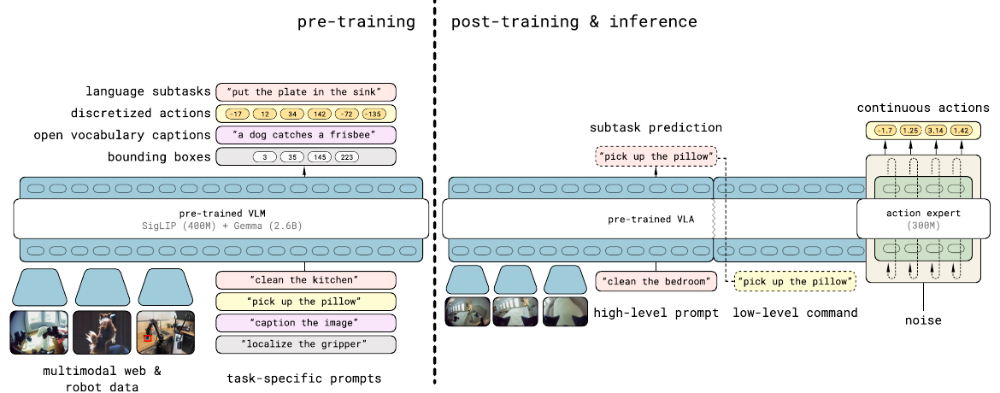
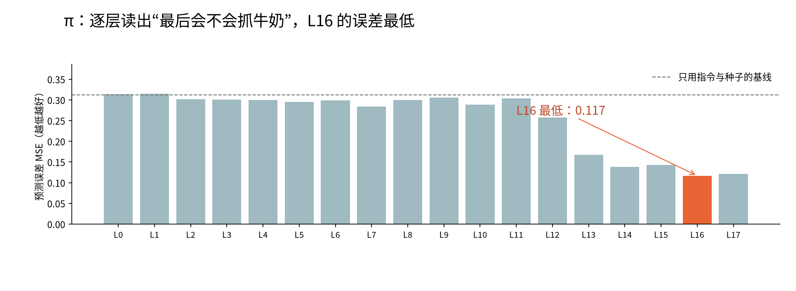
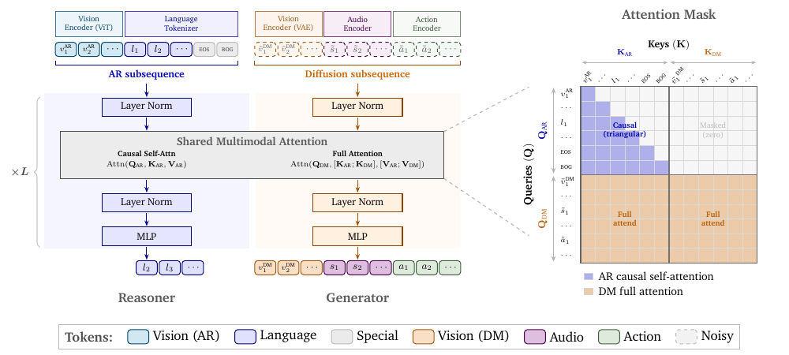
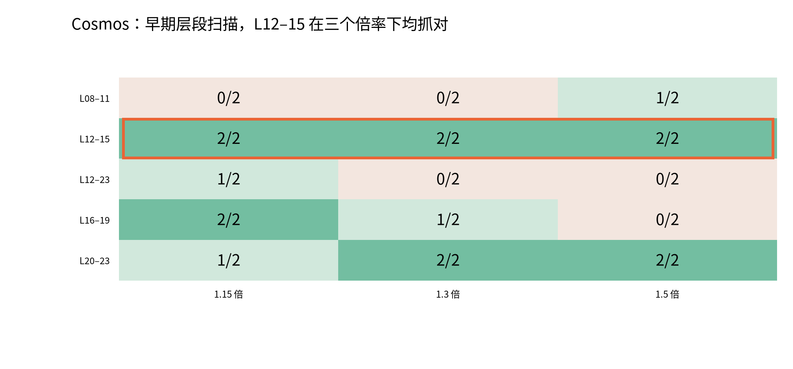

只改推理隐状态，不改权重。
看图、读指令 → 动作专家 → 机械臂动作

原图：Physical Intelligence，π₀.₅ 论文 Fig. 3 · 橙框：我们的干预模块。

L16 探针误差最低；尚未证明它是最佳干预层。 图表数据
结果：局部有效，但会破坏本来正确的动作。这里统计抓起目标，不是放入篮子。原始实验 · 跨场景验证
原桌面，橙汁未移位 · 指令“拿橙汁” · 3 个相同的新种子
每步重算：橙汁状态 +（倍率 − 1）×（橙汁状态 − 黄油状态）。
×2、×3 均 3/3；仅当前场景。 实验记录 · 看 ×2 的全部三个种子
理解分支（Reasoner）＋生成分支（Generator）

原图：NVIDIA，Cosmos 3 技术报告 Fig. 5 · 橙框：生成分支中的 L12–15。

先扫层选配置，再用 pilot1 新种子验证。 图表数据
结果：这组配对实验中，奶酪参照的隐层干预明显改善。与 CAG 比较时，参照句和干预位置都变了，不能只归因于层位置。
原始数据 ↗
我们的尝试：在中间层放大“目标指令 − 错抓物体指令”的差异。
基于已有文献整理；这是与前人工作的联系，不是新颖性证明。当前仍依赖人工指定错抓物体。
结果均为抓起目标，不是入篮成功率。两模型实验条件不同。